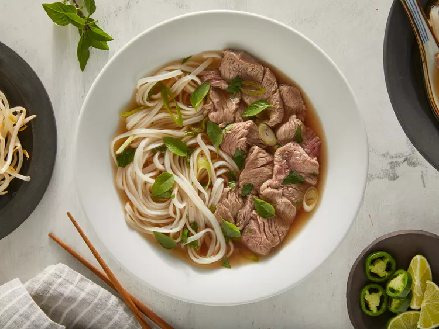

Back to home page
Pho Recipe

Description
Pho is a soup consisting of bone broth, rice noodles, thinly-sliced meat (in this recipe, it's beef), and fresh garnishes.
It is believed to have been created in northern Vietnam in the early 20th century.
It gained popularity in many countries after the Vietnam War.
Ingredients
- Beef Soup Bones
- Rice Noodles
- Beef
- Fish sauce
- Onion
- Spices and Seasonings
- Garnishes
Steps
- Roast the beef bones and onions until the bones are browned and the onions are soft.
- Make the broth.
- Soak the rice noodles for an hour. Meanwhile, bring the broth to a simmer.
- Boil the noodles, then drain and add them to a bowl.
- Top with sirloin, cilantro, green onion, and broth. Garnish with your desired toppings.